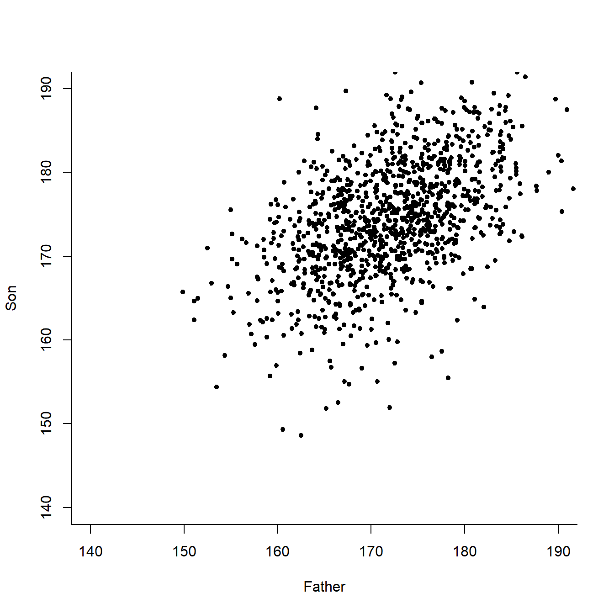
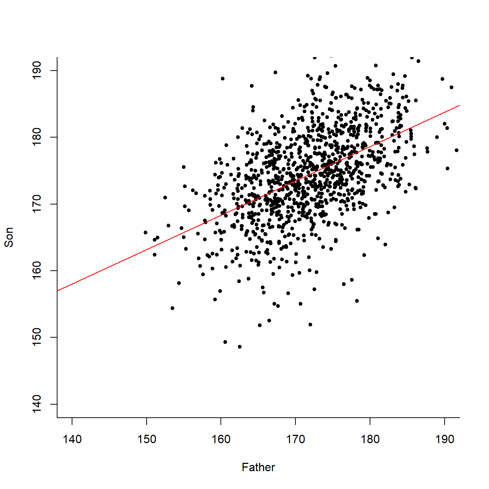
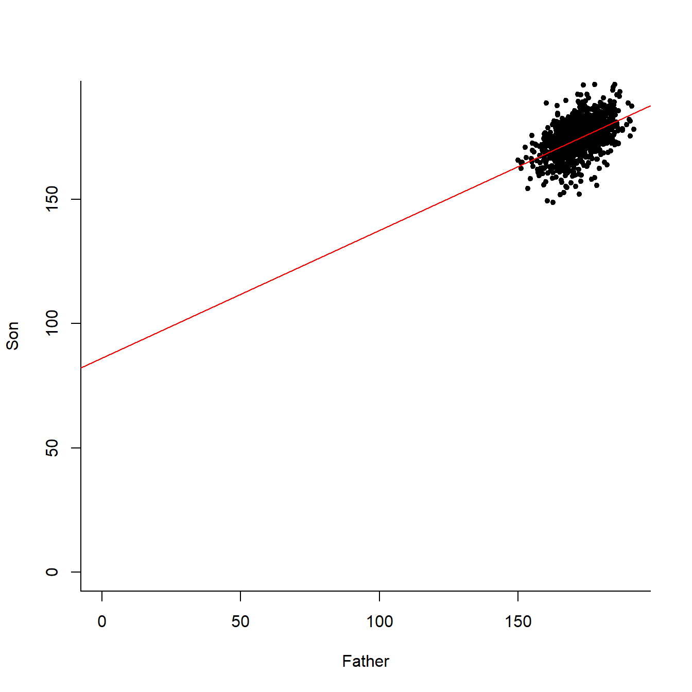
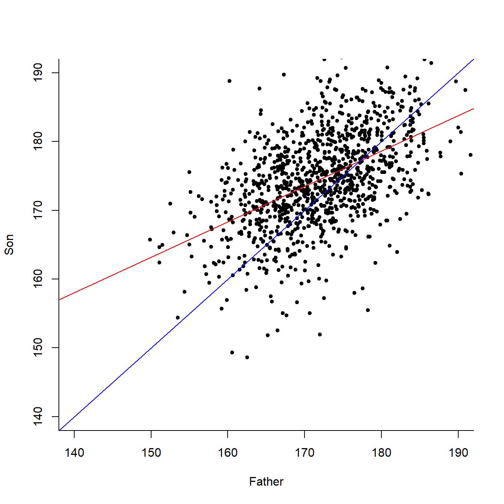

2 線形回帰分析 - Linear Regression 1.単回帰分析
All model is wrong but some are useful.
Model is a representation of truth. It is not actually the truth.
We are assuming reasonable representation.
すべてのモデルは「真実」ではないが、役に立つ。
モデルとは、真実を「表象」するものであり「真実そのもの」ではない
我々は、合理的な表象を想定するのだ。
「単回帰」分析、あるいは、Simple Regressionをするとき、たとえば身長と体重、人口密度と犯罪率、父親の身長と息子の身長、マーケティング予算と売上など、 ２つの要素 - 「変数」と呼び、それぞれ\(x, y\)で表現することが多いのですが、その関係に興味があります。
\(y\) を興味のある変数、より理解したい変数とし、つまり、target variable, (ターゲット・目的変数)と呼びます。
この\({}y{} を、x\)を使って予測したり分析したり説明したりするので、\(x\)を説明変数(predictor, predicting variableと呼びます。
例えば、あなたがマーケティングの責任者であれば、マーケティング予算が、説明変数\(x\)、それによって予測する売上が、目的変数\(y\)ということになります。これは、マーケティング予算は適切な権限があれば、決めることができる(操作可能)ですが、売上は結果に過ぎないため、売上を直接コントロールすることはできないからです。
また、もし「どこに住もうかな」とあなたが考えているとすると、 人口密度が説明変数 \(x\) で、犯罪率が目的変数 \(y\) だということになります。 住む場所、つまり人口密度はこれから選ぶことができますが、犯罪率自体はコントロールできないからです。
このように、\(x\) によって説明する、\(y\) の変化を知ること、しかも、シンプルに直線で知ることを、「単回帰分析」といいます。
まず、単回帰分析のツールや関数を振り回す前に、散布図(Scatter plot)を書きます。
散布図とは、変数２つを、それぞれ横軸と縦軸にとった図を言います。まずは見てみましょう。
このような、
- 1番めのご家庭は、お父さんの身長が165.22cmで、お子さんは151.83cm、
- 2番めのご家庭は、お父さんの身長が160.65cmで、お子さんは160.56cm
というようなデータがあるとします。
## Father Son
## 1 165.2232 151.8368
## 2 160.6574 160.5637
## 3 164.9865 160.8897
## 4 167.0113 159.4926
## 5 155.2886 163.2741
## 6 160.0773 163.1752このような、\((父親/Father, 息子/Son)\)のデータの組を、散布図で表現すると、次のようになります。

目的変数(target variable)である\(y\)を縦軸、 説明変数(predicting variable)である\(x\)を横軸に取ります。 ですから、これは、父親の身長(説明変数)によって、息子の身長(目的変数)が変わるだろうか？を知りたい時の散布図です。
ひとつひとつの点の場所を見ると、先程の\((父親, 息子)\)のデータが、完全に表現されていることがわかります。
この図では、今回、1000ものご家庭が調査に協力してくれましたが、 「たった一本の直線で、これら1,000のご家庭データから分かる、【父の身長と子の身長の関係】を表現しよう！」というのが、単回帰のコンセプトです。
先に、線を引いてしまいましょう

これです！この赤い線を引くことが「単回帰分析」です。 確かにこの赤い線は、この父と子の背の高さの、 ちょうど真ん中あたりを、うまく通っていそうな感じがします。
この適切な赤い線－これを「回帰直線」というのですが－をもって、統計学者たちは「父と子の、身長の関係がモデル化できた」といい、 「父親の身長を教えてくれれば、ある年齢の息子の身長を、高い精度で予測してみせる」と言うわけです。
全く同じグラフを、少しカメラを引いて描写してみると、 こんなふうになります。 
では、そのような直線は、どうやって引けばいいのでしょうか？ そもそも、「よい直線」と「ダメな直線」は、どう見分けたらいいのでしょうか？
例えば、たまたま父親と同じ身長の人が居たとして、 その人が、
「オレ、パパと同じ身長なんだ。だから、みんなは、パパと同じくらい身長があるのが普通だと思うよ」
と言ったとましょう。
彼の主張を、グラフに青線で書き入れると、こうなります。

この青い線は、父親が150cmの時、息子も150cm、父親が160cmの時、息子も160cm…。という点をつないでできた線です。 数学的に書くなら、\(y = x\)の直線です。
\[ y_i = \beta_0 + \beta_1 x_{i} + \epsilon_i \]